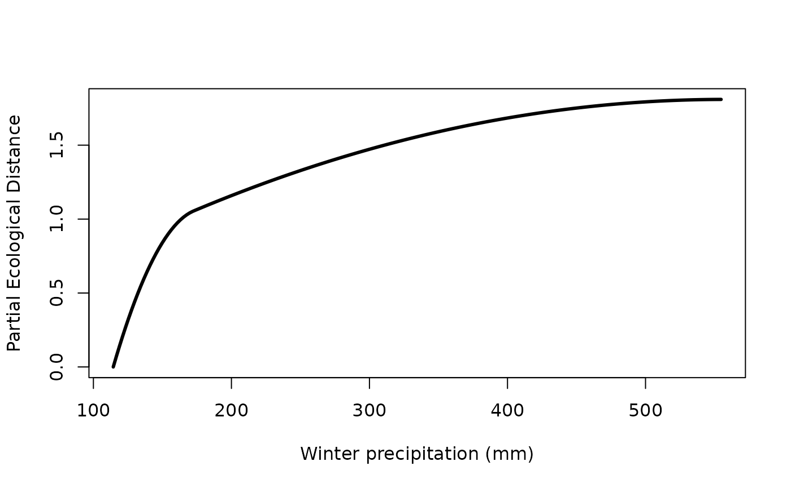

Extract I-spline Values From a Fitted Generalized Dissimilarity Model.
Source:R/gdm.ispline.extract.R
isplineExtract.RdExtracts the I-spline values from a gdm object. There is one I-spline for each predictor that has at least one non-zero coefficient in the fitted model.
Arguments
- model
A gdm object from
gdm.
Value
A list with two items. The first item contains the x-values (actual values of the predictors) of the I-splines and the second item contains the y-values (partial ecological distances) of the fitted I-splines.
References
Ferrier S, Manion G, Elith J, Richardson, K (2007) Using generalized dissimilarity modelling to analyse and predict patterns of beta diversity in regional biodiversity assessment. Diversity & Distributions 13, 252-264.
Fitzpatrick MC, Sanders NJ, Normand S, Svenning J-C, Ferrier S, Gove AD, Dunn RR (2013). Environmental and historical imprints on beta diversity: insights from variation in rates of species turnover along gradients. Proceedings of the Royal Society: Series B 280, art. 1768
Examples
##set up site-pair table using the southwest data set
sppData <- southwest[, c(1,2,14,13)]
envTab <- southwest[, c(2:ncol(southwest))]
sitePairTab <- formatsitepair(sppData, 2, XColumn="Long", YColumn="Lat", sppColumn="species",
siteColumn="site", predData=envTab)
#> Warning: No abundance column was specified, so the biological data are assumed to be presences.
#> Aggregation function missing: defaulting to length
##create GDM
gdmMod <- gdm(sitePairTab, geo=TRUE)
##extracts splines
exSplines <- isplineExtract(gdmMod)
##plot spline(s)
#spline for winter precip (bio19)
plot(exSplines[[1]][,"bio19"], exSplines[[2]][,"bio19"], type="l",
lwd=3, xlab="Winter precipitation (mm)", ylab="Partial Ecological Distance")
